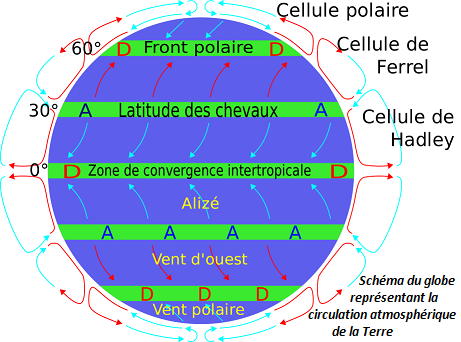

Répartition des vents sur le globe
Les vents sont des déplacements de masse d’air. Ils sont directement liés à la répartition thermique de la Terre.
L’air en se réchauffant, devient moins dense et a tendance à monter en altitude comparé à l’air froid, plus dense, qui a tendance à redescendre. Ainsi, au niveau de l’équateur, il se crée des basses pressions en surface, nommés dépressions : les masses d’air ayant tendance à s’élever. De la même façon, des hautes pressions se créent aux pôles, des anticyclones.
Les masses d’air chaudes de l’équateur vont ensuite se déplacer en altitude vers les pôles, en se refroidissant progressivement. A contrario, les masses d’air froides des pôles vont se déplacer en surface. Ce n’est pas une seule cellule, mais trois cellules qui vont se disposer de part et d’autre des deux hémisphères : quatre cellules des deux parts de l’équateur et aux pôles et deux cellules inverses aux niveaux des tropiques. La force de Coriolis de la Terre, due à sa rotation, défléchie ces vents vers l’Ouest pour les quatre premières cellules et vers l’Est pour les deux dernières.
De nombreux autres facteurs entrent aussi en compte comme le relief au sol, les littoraux, ... Qui complexifient la circulation atmosphérique de la Terre.